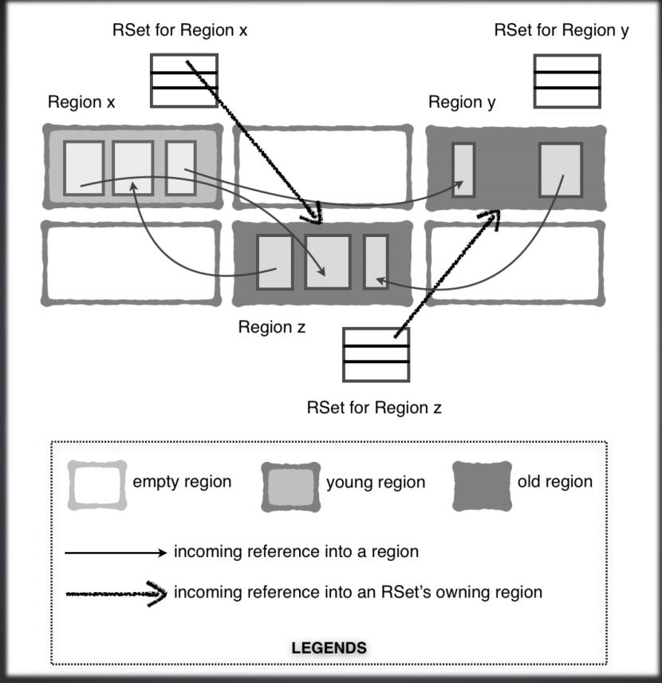

特点
G1是一个：
- 并行算法
- 增量式垃圾收集器
- 具有可预测停顿时间的优势
- 具备内存整理功能
Region
G1把整个heap分为～2048个Region，尺寸在1M-32M之间（得是2的指数）。
Region分为：Eden，Survior，H（巨大对象），Old区。Eden和Survivor组合成Young Region。H是Old区的一种。一个对象尺寸超过Region的1/2，就是巨大对象，巨大对象直接分配在Old区，并被标记为H。

垃圾收集过程
Young GC
YGC，采用复制算法，并行的。
YGC逻辑上和其他GC算法一样的，也是
并行阶段：
- 外部根扫描
- 更新Remembered Set（RSet）
- 处理Update Buffers
- 扫描RSet
- 对象复制，Eden和S-From -> S-To或Old
- 终止
- 其他工作
串行阶段：
- 选择Collection Set
- 引用处理，比如soft、weak、final、phantom引用
- Reference En-queuing
- 释放CSet，同时也会释放RSet
并发标记
当Old Region使用空间超过整个Heap的某个比例会触发对Old Region并发标记（注意只标记，不回收），-XX:InitiatingHeapOccupancyPercent，默认45，
并发标记的阶段：
- 初始标记（STW），在一个普通的YGC（STW）时同时完成的。
- 根Region扫描阶段，扫描前一个阶段幸存的Region，找到那些对Old Region的引用，标记被引用的对象。
- 并发标记，
- 再标记（STW），处理SATB buffer，跟踪在前面阶段里新生成的对象，同时处理引用关系。
- 清理（STW），如果某个Region全是垃圾，那么就直接回收掉了。如果不是，那么这个Region会记录到Collection Set里。
关于三色标记法
在标记过程中每个对象会被标记成三种颜色：
- 白色：没有被标记到。
- 灰色：标记到了，但是字段还没被标记完。
- 黑色：标记完了。
所有标记完成后，会把白色的作为垃圾回收掉（因为不可达）。
和三色标记法相关的一个概念是Pre-Write Barrier。
Mixed GC
把Collection Set里的待回收的Old Region混合到YGC里慢慢消化掉。
Full GC
如果Mixed GC来不及回收掉空间，那么就会触发Full GC。会停止整个JVM。
Old GC（逻辑上）的阶段
Old GC是分层次进行的：
- 并发标记结束后，对于全垃圾的Region，在清理阶段会直接清理掉
- 对于部分垃圾的Region，则放到YGC中慢慢消化掉（比如每次YGC清理几个Old Region），这个成为Mixed GC
- 如果还是不行，才会对整个堆进行回收Full GC
H对象的回收
尺寸超过1/2 Region的对象被称为，H对象，直接分配在Old区里，这个区被标记为H。它要么在并发标记的清理阶段回收，要么在Full GC的时候回收。
G1假设大对象不是短命对象，因此把他们放到H区里可以避免被YGC反复复制，提高性能。
单如果你的大对象的确是短命的，那如果把他们放到H区里反而会增加Old GC的压力，还有可能导致Full GC。因此你可以通过调整-XX:G1HeapRegionSize=16M来调整Region的大小，从而使得你的大对象不被G1认定为H对象。
几个数据结构
Remeber Set
每个Region都有，记录了外部引用的信息（其他Region到自己Region的引用信息）：
- old -> young的引用
- old -> old的引用
- 注意不需要记录young -> young 和 young -> old，因为这些在YGC扫描Young Region的时候就能够得到
下面是一张图：
Region X是Young Region，Region Y和Z是Old Region。
细箭头代表A Region里的对象引用B Region里的对象，粗箭头代表A Region被B Region引用了。
仔细看可以发现粗箭头只存在 old -> young 和 old -> old。
在YGC时，需要扫描Old Region里到Young Region里的引用，RSet可以提高扫描效率，而不需要遍历所有Old Region。
同时，因为YGC采用的复制算法，而且是并行的，那么某一时刻某个对象同时出现在两块Region里（比如，Eden和S-To），为了YGC之后修复引用（正确的应该是引用到S-To里），Remeber Set配合Pre Write Barrier解决这个问题（以上个人猜测，未必准确）。
Remeber Set 三种粒度（下面讲的不是很明白）：
- Sparse，稀疏矩阵，一个card索引的hash table
- 细粒度，一个开放hash table，bitmap，每个bit代表一个card
- 粗粒度，bitmap，每个bit代表一个外部Region
三种粒度的关系是：当某种粒度的空间满了，就切换到下一种，从而节省空间。但是节省空间的结果就是增加了扫描的时间，因为记录的信息也粗了。
Card Table
Card Table是一种特殊的Remember Set形式，它是一个bitmap，每个bit对应了Region中的一片区域，而这片区域里有对象引用了我这个Region里的对象。更多介绍看Card Table和Write Barriers。
Post-Write Barriers
编译器插在更新引用语句后面的代码，用来更新RSet。
Concurrent refinement threads
并发更新RSet的线程。
Collection Set
记录了需要收集的Region列表，这个在并发标记之后。对于YGC来说只有Young Region，对于Mixed GC来说，有Young也有Old。
评论